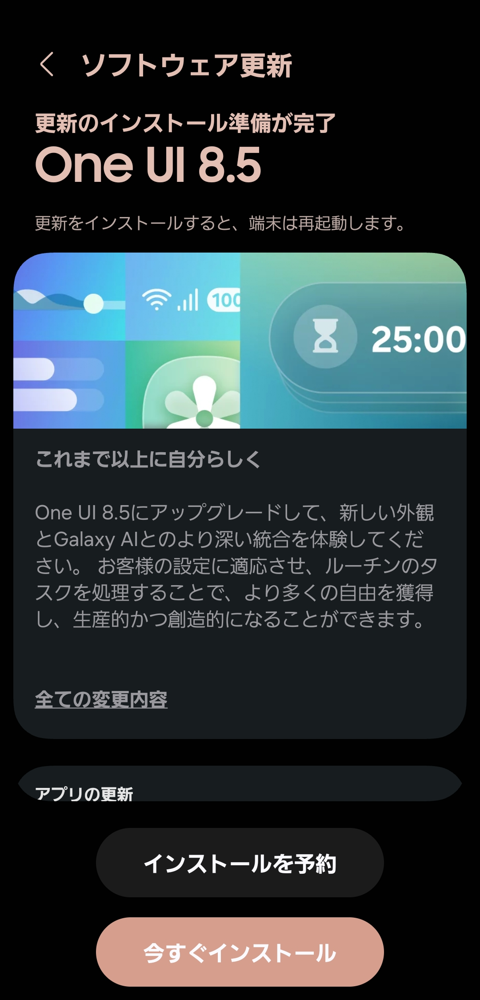
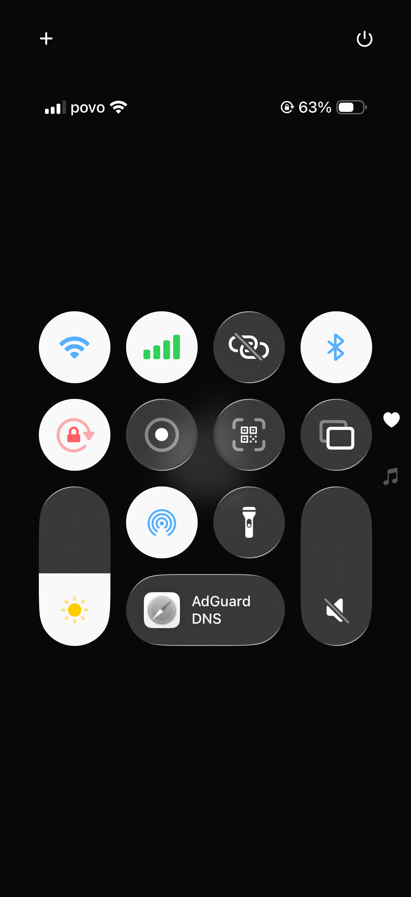
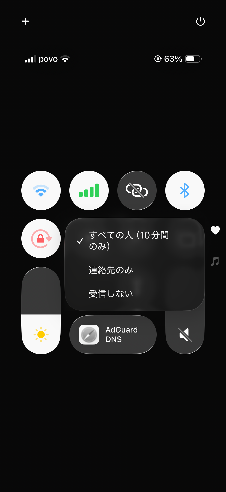
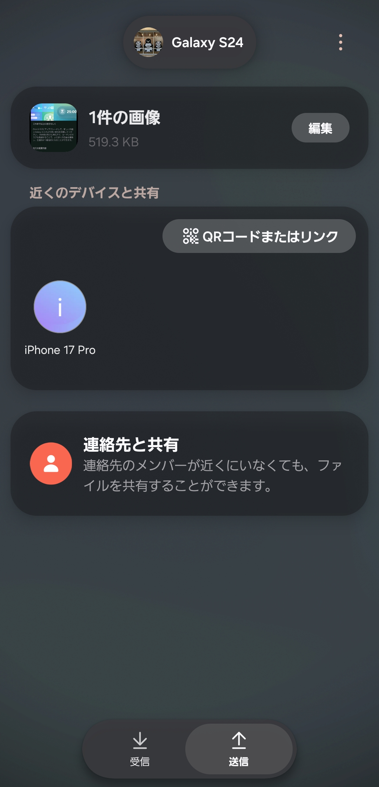
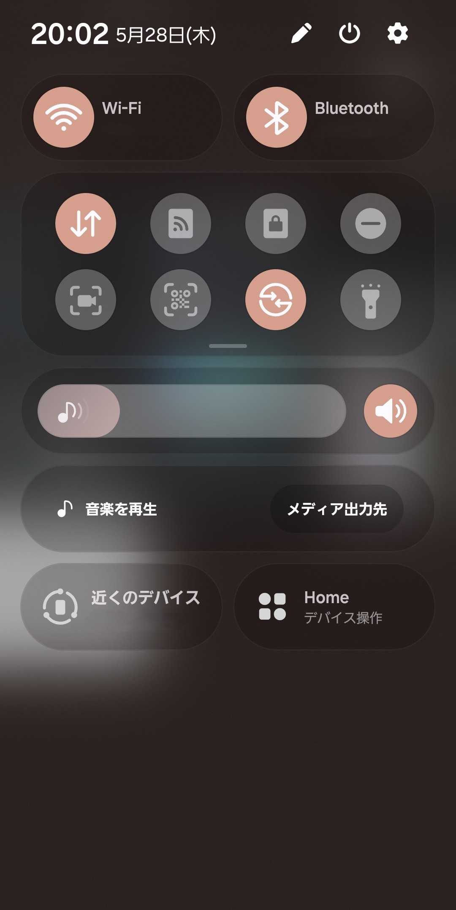
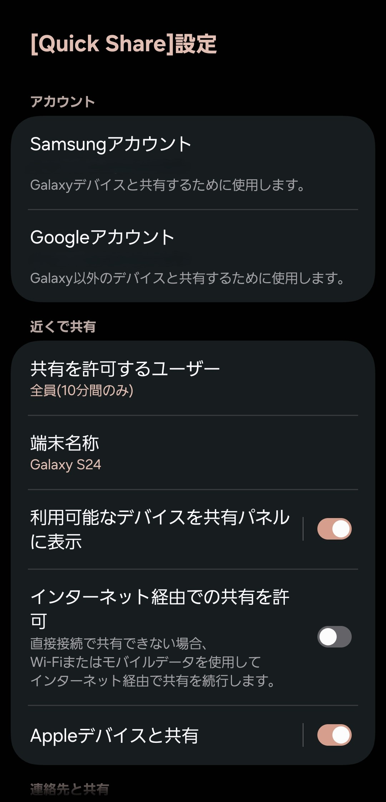
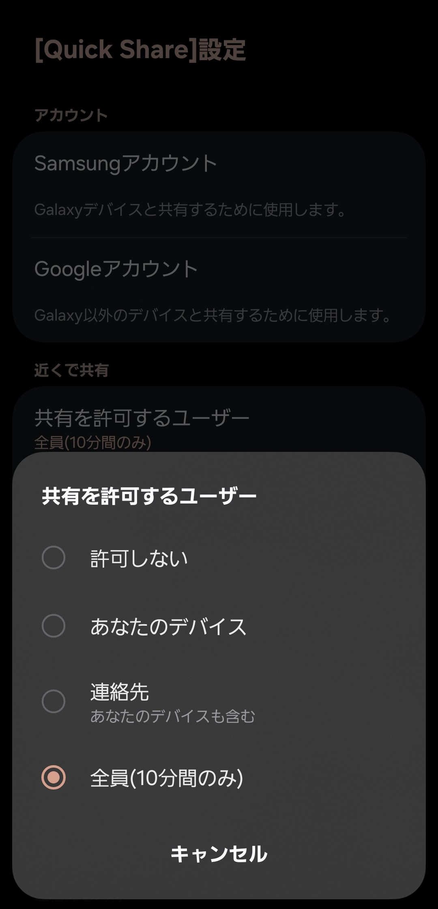
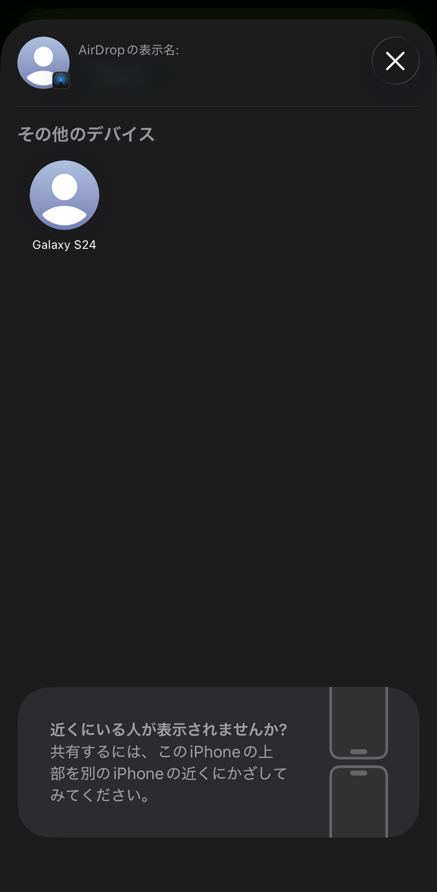

【Galaxy】Quick ShareでiPhoneとAirDropを送受信する方法

GalaxyでAirDropが利用可能に
2026年3月12日にGalaxy S26シリーズで、2026年5月下旬にOne UI 8.5にアップデートしたGalaxy S25シリーズ、S24シリーズ、Z Fold7、Z Flip7、Z Fold6、Z Flip6で、Quick Shareに "Appleデバイスと共有" という機能が実装された。 これにより、iPhone、iPad、MacなどのApple製品へのAirDropが可能になった。 ここではGalaxyとiPhoneでAirDropを送受信する方法を解説する。
対象機種
目次
GalaxyからiPhoneに送信

ここでは対象のGalaxyからiPhoneにAirDropを送信する方法を解説する。 画像ではGalaxy S24からiPhone 17 Proに画像を送信している。
方法
1.GalaxyをOne UI 8.5以降にアップデートする
2026年以降に発売されたGalaxyは既にOne UI 8.5以降をデフォルトで搭載している。

2.iPhoneでコントロールセンターのAirDropのアイコンを長押しする
コントロールセンターは画面右上を上から下にスライドすると現れる。

3. "すべての人 (10分間のみ)" をタップする
これにより10分間、すべての端末からのAirDropの受信が可能になる。

4.Galaxyで共有からQuick Shareを選び、表示されたiPhoneをタップする
One UI 8.5へのアップデート直後はiPhoneが表示されないことがあり、その場合は一度端末を再起動する。

iPhoneからGalaxyに送信

ここではiPhoneから対象のGalaxyにAirDropを送信する方法を解説する。 画像ではiPhone 17 ProからGalaxy S24に画像を送信している。
方法
1.GalaxyをOne UI 8.5以降にアップデートする
2026年以降に発売されたGalaxyは既にOne UI 8.5以降をデフォルトで搭載している。
2.Galaxyでクイック設定パネルのQuick Shareのアイコンを長押しする
クイック設定パネルは画面右上を上から下にスライドすると現れる。

3. "共有を許可するユーザー" をタップする

4. "全員(10分間のみ)" をタップする
これにより10分間、すべての端末からのQuick ShareまたはAirDropの受信が可能になる。

5.iPhoneで共有からAirDropを選び、表示されたGalaxyをタップする
One UI 8.5へのアップデート直後はGalaxyが表示されないことがあり、その場合は一度端末を再起動する。

悲願のAirDrop対応
これまで、AndroidとiOSのファイル転送の手段はGoogle ドライブやOneDriveなどのクラウドストレージ、メールやLINE、Instagramなどの連絡アプリ、SendAnywhereなどのサードパーティ製ファイル共有アプリしかなかった。 これらはすべてインターネットを通して転送を行うため、転送速度がQuick ShareやAirDropと比較して遅い、転送すると画質が落ちる、お互いにアプリを入れている必要があるなどのデメリットがあり、とても不便だった。 しかし、2025年8月に発売されたGoogle Pixel 10シリーズでQuick ShareがAirDropに対応し、それ以降相互のファイル共有ができるAndroid端末が少しずつ増えている。 これまでAirDropが使えないからという理由でiPhoneを選んでいた人や、AirDropが使えないことで疎外感を感じていたAndroidユーザーにとってこのような風潮は長年の悲願であり、とても喜ばしいことである。 この機能をすべてのAndroid端末に実装するにはもう少し時間がかかりそうだが、今後の流れに期待したい。
プロフィール

高度情報社会の最先端を駆け抜ける